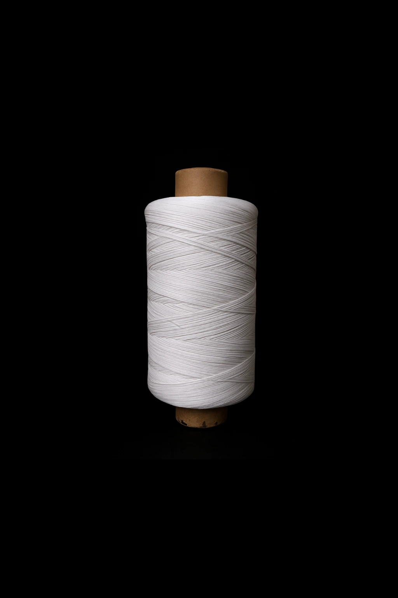

Expert Motor Winding Thread Manufacturers in Faridabad

Specialized Motor Winding Solutions
Parth Enterprises specializes in manufacturing premium quality motor winding threads in Faridabad. Our threads meet stringent standards for motor manufacturing, ensuring optimal insulation, strength, and performance backed by 25+ years of industry expertise.
Motor Winding Thread Types
- Manual Motor Winding Thread - Traditional hand-winding applications
- Automatic Motor Winding Thread - High-speed machine compatibility
- Precision Winding Thread - Tight tolerance applications
- Heavy-Duty Motor Thread - Industrial motor applications
Motor Applications
- Ceiling Fan Motors
- Table Fan Motors
- Water Pump Motors
- Industrial Motor Rewinding
- Transformer Winding
Technical Support & Custom Solutions
Our technical team provides expert guidance on thread selection, winding techniques, and troubleshooting. We offer custom thread specifications to meet your specific motor winding requirements.
Contact Motor Winding Thread Experts
Get same-day dispatch from our Faridabad facility. Contact us for technical specifications, bulk pricing, and custom solutions.